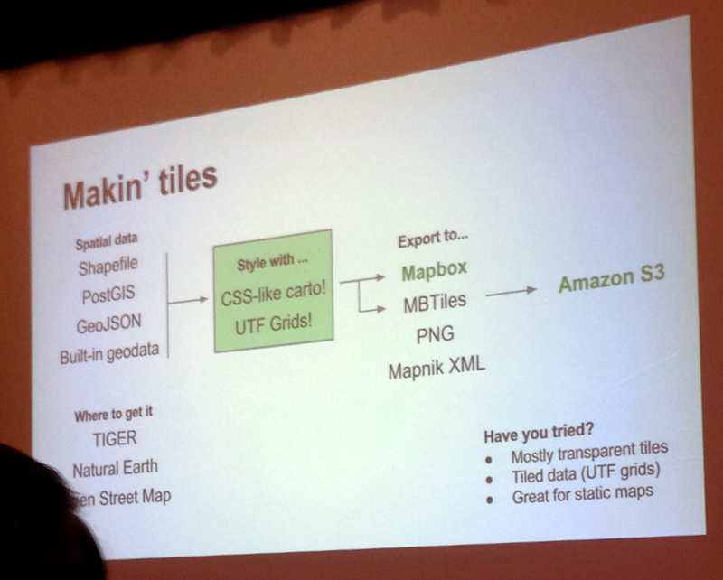
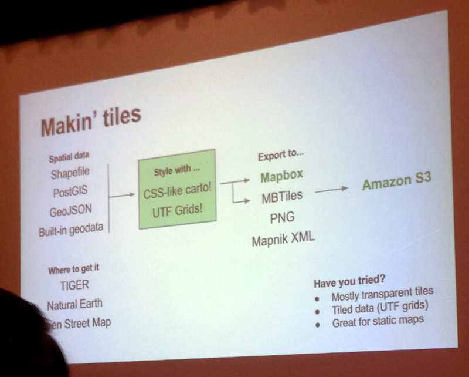

Opening example: Shapefile of the Florida coastline Goal: Create a 1-mile buffer zone Problem: The shape was way too complex; attempts became too memory intensive.
“What you need is a tool to solve the problem. No time for obsession.”
Think about the end product when choosing the best tools to get there.
When using a geocoding tool, read the TOS:
(the last two are often at odds)
Some examples:
Use Caution:
Example: Reuters’ Ammonium Nitrate Map
(Still did, due to old data provided by states)
Vector Web Map tools:
It’s hard to find data that crosses international borders.
Example: CIR’s drug trafficking map
Question: Where is a good place to start? Answer: TileMill
Question: How can you use a huge dataset? Answer: Narrow it down. Clean the data. Use the accuracy field. Throw out P.O. Boxes and similar. Test if returned location and actual location are in the same county.
 
